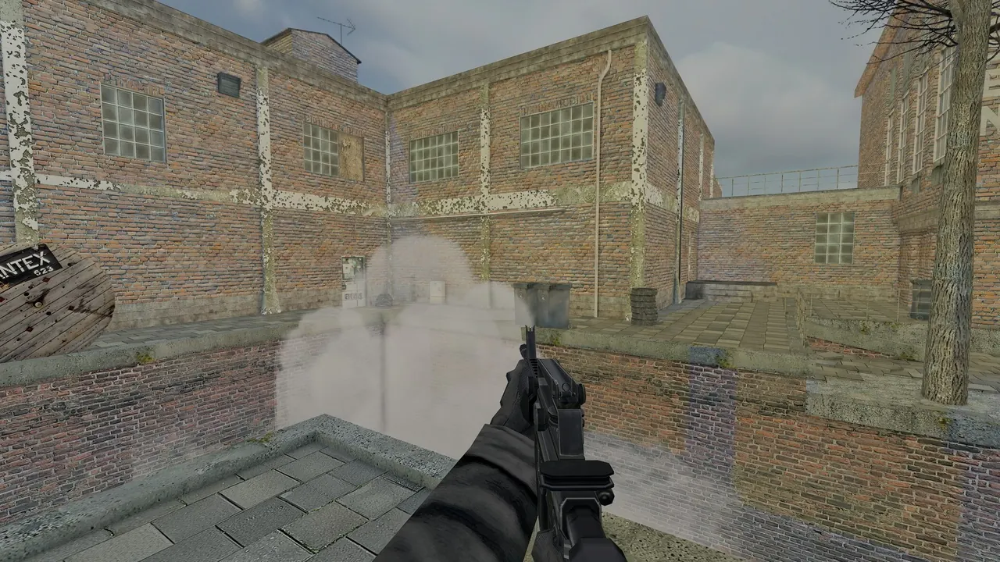
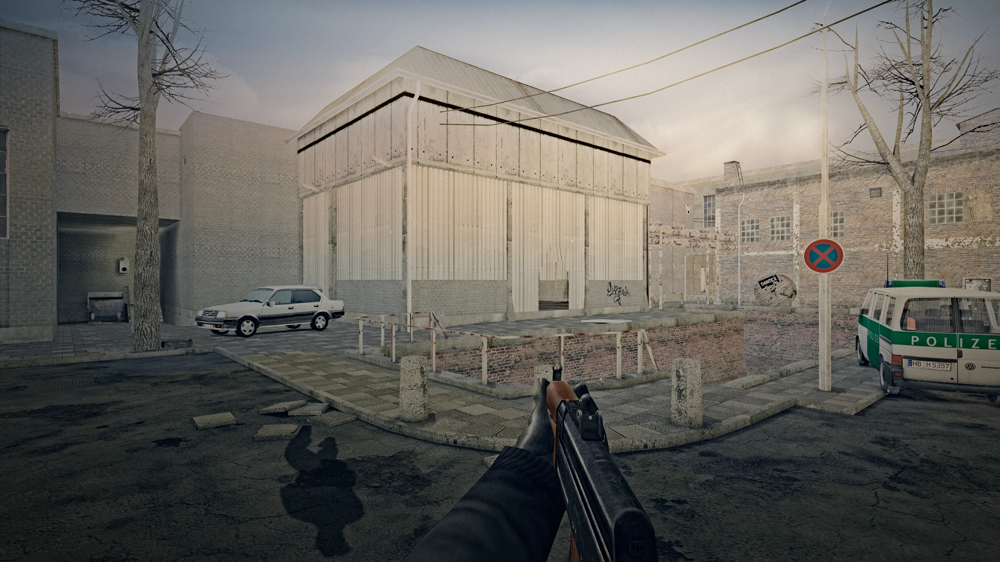
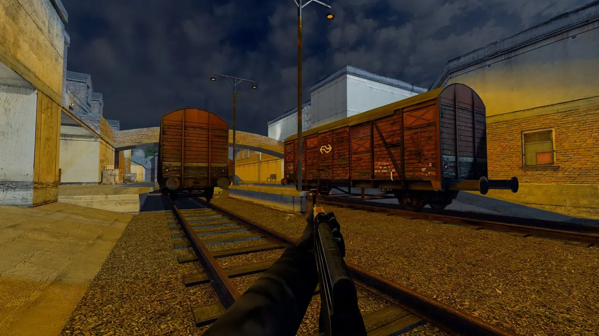
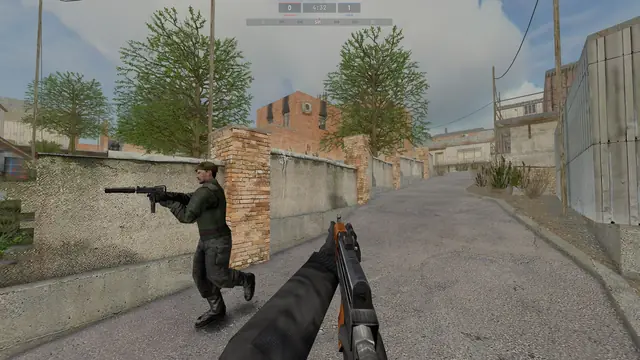
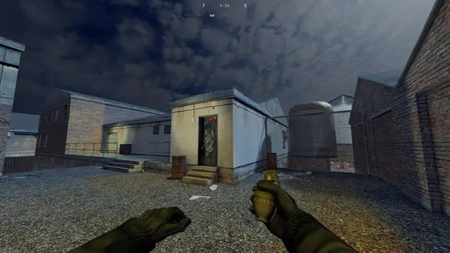
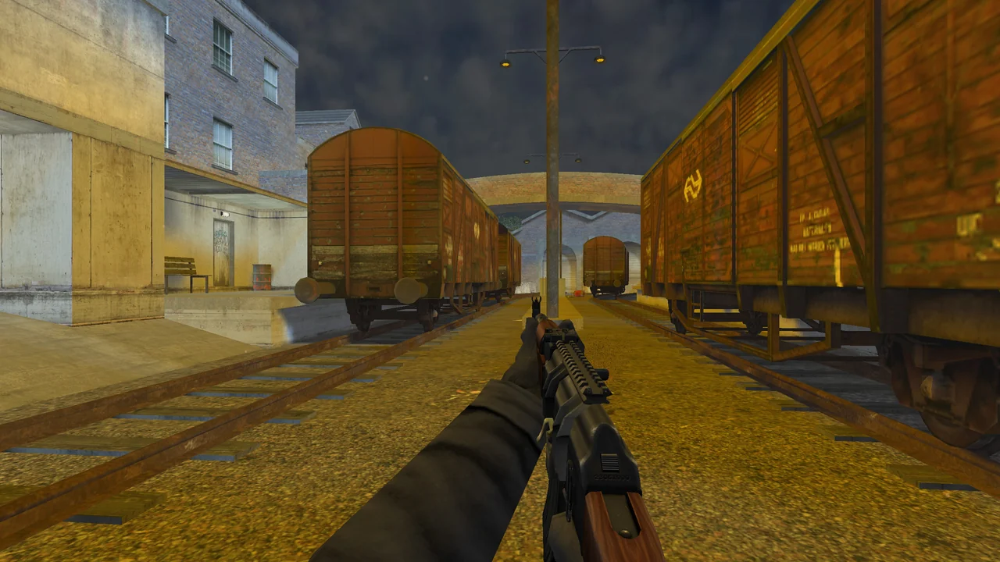
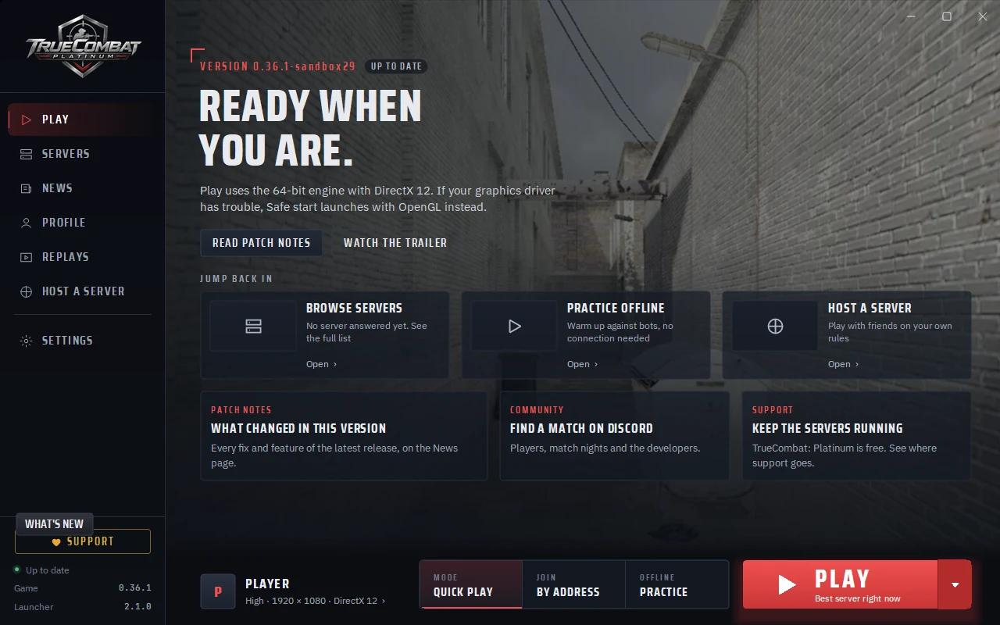

DirectX 12 renderer
Every frame is rendered with DirectX 12 in the game's own window. Edge smoothing, ambient shadows, HDR, bloom and sharpening are optional. Older PCs fall back to OpenGL automatically.
 New devlogFront lines
New devlogFront lines


The classic tactical shooter, rebuilt as a native 64-bit game with a DirectX 12 renderer. The original maps, soldiers and HUD, and a launcher that hosts your servers and keeps the game current.

Bots that listen, plan and retake together, four classic community maps, a rebuilt launcher with friends, and a new layer of light, weather, sound and body language across every map. The full story of update 0.39.0.
 Graphics · Remodelled, on the road to 0.40
Graphics · Remodelled, on the road to 0.40
 Gameplay · Close quarters, together
Gameplay · Close quarters, together
TrueCombat: Elite was a realistic modern-combat total conversion for Enemy Territory: one life per round, real weapons, and maps built for slow, careful play. It still runs as a 32-bit mod on an engine from 2003.
TrueCombat: Platinum rebuilds it as a native 64-bit Windows game. The renderer is new DirectX 12 code, the HUD is matched against the original pixel by pixel, and movement speeds come straight from the original values. If DirectX 12 gives you trouble, Safe start runs it on OpenGL.

Every frame is rendered with DirectX 12 in the game's own window. Edge smoothing, ambient shadows, HDR, bloom and sharpening are optional. Older PCs fall back to OpenGL automatically.
Layout, fonts, compass, stamina bar, round clock and objective lines from TC:E. The body silhouette turns yellow, orange and red as you take damage.
Sprint on Shift until your stamina runs out, lean around corners with Q and E, crouch on C and go prone on X. Ladders and water work as they did in TC:E, and every speed matches the original.
Every shot lands on a region with its own damage. Crouched and prone players present a smaller target.
All 27 guns, the knife and every grenade, with original damage, recoil and spread. Rounds punch through doors, walls and crates, losing power with every surface.
The launcher checks GitHub for new versions, shows download speed and time left, and only installs updates signed by Team Terminus. Your settings and servers are kept.



One life per round, real-world weapons and maps built for patient, tactical play. The video starts at 0:32.
The video plays from YouTube in privacy-enhanced mode. Nothing loads from YouTube until you press play.
Every image is a straight capture from the DirectX 12 renderer. No paintovers.






Drag across the image to compare the original look with the new presets. Same spot, same frame, the Railhouse west railyard at 1440p.
HD textures for the world, models, HUD and menus are installed by default. On RTX cards the DLSS quality modes are available too: enter r_dx12Dlss 2 to 5 in the console, then vid_restart.


Low Ultra
Two official EU servers run around the clock: #1 Ranked, where every match counts towards the leaderboards, and #2 Unranked, kept busy with bots. Every server hosted with List publicly switched on appears here and in the launcher's Servers tab.
You can always host from the launcher and share your address. Others join you on UDP port 27971 by default. Everyone in a match needs the same version.
| Server | Map | Players | Mode |
|---|
Loading the live server list. The Servers tab in the launcher shows the same list.

Ready-up, a knife round for sides, half-time and tactical timeouts that freeze the whole match. One command on any server.
Match modeThe realistic tactical shooter built on Enemy Territory, playable today on Windows 10 and 11.
TC:E todayEvery update since the first public build is on the news page, with an RSS feed. Downloads are on GitHub Releases.
Read the beginner's guide for the controls, game modes and a few tips that keep you alive longer. The weapons page lists every gun from TC:E.
Yes. Download it from GitHub Releases and play. Each release includes its source code and the licenses for the original game files.
Grab the press kit with logos, screenshots and a fact sheet.
Yes. Pick an official EU server in the launcher's Servers tab, ranked or unranked, join any other public server, or host your own match in a few clicks.
Yes, and more. Every weapon, all seven game modes, the original movement speed, leaning, ladders, swimming, ledge climbing and the sniper scope are in, joined by additions such as the live minimap and a competitive match mode. The roadmap shows what follows.
Join the TrueCombat: Platinum Discord. That's where matches get organised, servers get shared and new versions are announced first.
Press Safe start in the launcher. It runs the game on OpenGL in a 1280 × 720 window, and the game also falls back to OpenGL by itself if DirectX 12 fails.